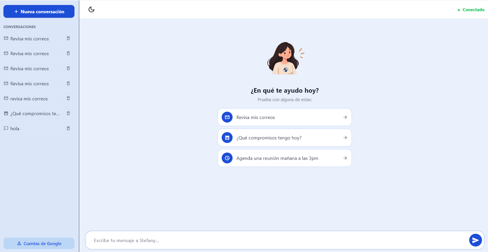
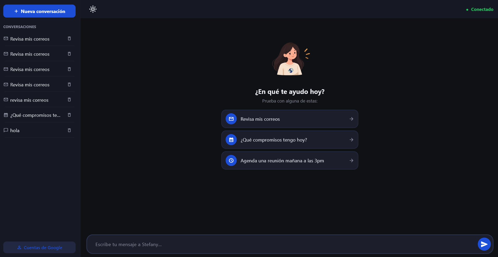

Organiza tu correo y tu calendario, detecta compromisos y cruces de horario, y gestiona tus citas de forma conversacional — en español, sin inventar fechas y sin ejecutar nada sin tu confirmación.


Cada función corre en tu propio equipo o contra tus propias cuentas — nada se comparte con terceros que no sean Google.
Analiza cada correo nuevo y resume solo lo que de verdad dice — sin fechas ni compromisos ficticios.
Compara cada compromiso nuevo contra tu calendario real y te avisa si se cruza con algo ya agendado.
Conecta más de una cuenta de Gmail y Calendar y consulta o agenda en cualquiera de ellas desde un solo chat.
Cuando hay un conflicto real, te propone un borrador de correo listo para revisar y enviar.
Guarda lo que le pidas recordar y lo tiene en cuenta en próximas recomendaciones, todo almacenado en tu equipo.
Cada conversación queda guardada y organizada en un panel lateral, lista para retomarla cuando quieras.
Stefany corre como aplicación de escritorio liviana; el modelo de lenguaje se ejecuta en un servidor remoto, así que tu equipo no necesita GPU.
| Componente | Mínimo |
|---|---|
| Sistema operativo | Windows 10 de 64 bits o superior |
| Memoria RAM | 4 GB |
| Espacio en disco | 300 MB libres |
| Procesador | Dual-core 1.6 GHz o superior |
| Conexión a internet | Requerida (permanente) |
| Cuenta de Google | 1 o más, con Gmail y Calendar |
Descarga el instalador, conecta tu cuenta de Google y dale a Stefany unos minutos con tu bandeja de entrada.
Descargar Stefany.exe